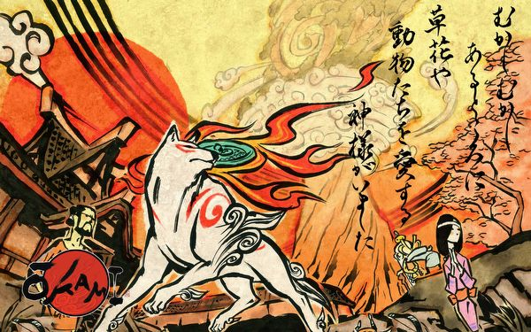

Początek świata
Nihon-shoki i Kojiki na ogół zgadzają się w swych opisach stworzenia. Niektórzy uczeni dopatrują się w tych opowieściach pewnych naleciałości chińskich. Możliwe, że powodem nie są późniejsze wpływy, lecz że mity te przyniosły
do Japoni ludy, które znacznie wcześniej migrowały w Chin i Korei. Wedle tych mitów, wszechświat pierwotnie składał się jedynie z nieuformowanej, tłustej, galaretowatej bryły. Z masy tej powstał jeden tylko bóg Amanominakanuszi-nokami.
Po nim pojawiło się jeszcze czworo bogów, w ten sposób tworząc grupę pierwotnych pięciu bogów. Potem powstało kolejne siedem pokoleń bogów i bogiń. Wszystkie te istoty boskie zamieszkiwały Wysoką Równienę Niebios, wówczs bowiem nie istniał
jeszcze stały ląd. Najmłodszymi z bóstw byli Izanagi i Izanami. Wzięli na siebie zadanie stworzenia ziemi. Stanąwszy na Pływającym Moście Niebios, wspólnie mieszali włócznią mętne głębiny. Gdy wyciągali włócznię z wody, krople opadły,
tworząc ląd, wyspę zwaną Onogoro.
